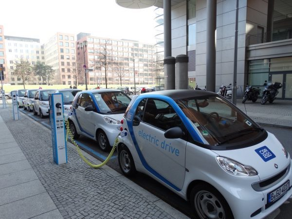

Vantagens e desvantagens dos veículos elétricos
Veículo Elétrico é um tema muito atrativo para todas as pessoas. Desde que o problema com a poluição se tornou mais visível, o veículo movido a combustível fóssil se tornou um vilão e o veículo elétrico retornou como uma alternativa atraente.
Lembramos que o veículo elétrico já dominou a cena nos EUA inicio do século 20. No entanto, foram suplantados pelos automóveis a gasolina produzidos pela Ford, que por causa do baixo preço e bom desempenho, conquistaram o mercado.

As principais vantagens do veículo elétrico
Diminuição drástica dos resíduos poluentes: Mesmo que toda a energia utilizada para carregar a bateria venha de uma usina termelétrica, ainda assim são gerados menos resíduos poluentes do que se fosse queimado o combustível fóssil para movimentar o carro. E, caso a energia elétrica seja de fonte renovável (como hidroelétrica e eólica), então a vantagem é muito grande para o carro elétrico.
Melhor eficiência energética: a eficiência dos motores a combustão não passa de 40%. Com a necessidade do câmbio, a energia entregue as rodas é menor ainda. Os motores elétricos têm mais de 90% de eficiência. Em conjunto com um bom inversor (também 90% de eficiência), a eficiência total do conjunto pode ser de 81%.
Condução mais agradável: por ser bastante silencioso, a condução do carro elétrico é bastante agradável. Caso todos os carros de uma cidade fossem elétricos, a poluição sonora seria bem menor.
Menor custo de manutenção e operação: o custo atual da eletricidade comparado com o preço do combustível torna o custo do km rodado muito mais barato com um veículo elétrico. A quantidade menor de peças móveis e de filtragem faz com que haja menos desgaste mecânico, tornando a manutenção simplificada.
No Brasil, teríamos também o benefício de não existir “energia adulterada”. A bateria é, com certeza, o ponto fraco deste quesito. Porém, caso a mesma fosse alugada, por exemplo, ao invés de ser comprada, o custo de operação aumentaria significativamente, porém ainda ficaria vantajoso.
As principais desvantagens do veículo elétrico
As principais desvantagens do carro elétrico são relacionadas com a utilização de uma bateria, que são:
Baixa autonomia: ela não armazena tanta energia quanto um tanque de combustível. Em outras palavras, a bateria tem densidade de energia menor do que o tanque de combustível. Isso significa que para a mesma autonomia, o volume da bateria seria muito maior do que o tanque, aumentando consideravelmente o peso do veículo e, consequentemente, aumentando o consumo.
Durabilidade da bateria: as melhores tecnologias em termos de capacidade de carga (baterias de lítio) têm problemas de durabilidade. Elas diminuem sua capacidade de carga com o passar do tempo (pelo menos 10% ao ano), tornando-se inviáveis em 4 ou 5 anos.
Segurança da utilização: não se pode desprezar o problema de segurança trazido pelas baterias. Basta procurar no Youtube por explosão de baterias de lítio, para ver como as mesmas podem ser perigosas no caso de uma batida forte. É claro que os fabricantes tem trabalhado nesta questão para trazer a confiabilidade e segurança para um nível aceitável. Mas, qualquer que seja a solução adotada, ela inevitavelmente vai trazer mais complexidade para o sistema e mais peso para o veículo.
Tempo de recarga: As tecnologias atuais de baterias, invariavelmente, pedem que a recarga seja lenta para otimizar a vida útil. Desta forma, a única forma de “reabastecer” rapidamente o automóvel, seria trocar a bateria inteira. Esta é uma técnica utilizada em alguns países da Europa. No entanto, mais peso será adicionado ao veículo para comportar o mecanismo de travamento da bateria e além disso, esse mecanismo nunca seria tão bom quanto a própria bateria ser integrada ao veículo. Além do mais, no caso da bateria integrada, poder-se-ia usá-la como elemento estrutural ou de fechamento do veículo, diminuindo assim o peso final do mesmo.
Estes são alguns argumentos favoráveis e contrários à utilização do veículo elétrico. Faça você o seu julgamento!